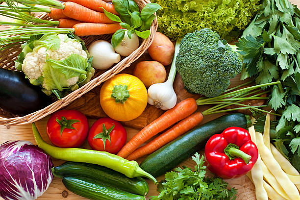

Same-day groceries in your neighbourhood
All your weekly food shopping, delivered in one simple order
FreshBasket Market connects you to trusted local markets and supermarkets so you can stock up on fresh produce, pantry staples and household essentials without leaving home.
- Order before 4pm for free same-day delivery in eligible areas
- Real time stock from partner stores so you only see what is available
- Secure checkout with saved addresses any payment methods

How FreshBasket markeet works
From browsing to delivery we make weeekly shopping easy and predictable
1. Browse local store
Enter your address to see nearby super market and open air markets. Filter by price, distance, or speciality products.
2. Fill your basket
Add fresh produce, grains, meat, snacks and household items. see live totals delivery windoews and subtitution options
3. Track your delivery
Our shoppers pick and park your order carefully follow your rider on the map and receive update until its reaches your door
Everything you need in one place
Shop accross aisles just like a physical supermarket without waiting inline
Fresh meet & vegetables
Crisp lettuce, ripe tomatoes, seasonal fruits, herbs and more sourced daily from partners farm and markets.
- • Hands selected produce with quality cheeck before dispatch
- • Seasonal bundles designed for soups, salads and stir-fries
Pantry and dry goods
Stock up on rice, pasta, beans, flour, spicies, tinned foods and everyday cooking essentials from trusted
- • Bulk and family size options to help you save on weekly staples
- • Clear labelling for dietary needs such as glutten-free or vegan
Diary, meat & frozens
From milk, youghurt and cheese to poultry seafood and frozen vegetables, keep your fridge and freezer fully stocked
- • Temparature-controlled delivery to protect sensitive items
- • Easy re-ordering of your fridge favourite in one tap
Ready to simplify your grocery shopping?
Create a free FreshBasket Market account, save your usual items and delivery
address, and complete your next weekly shop under ten minutes.